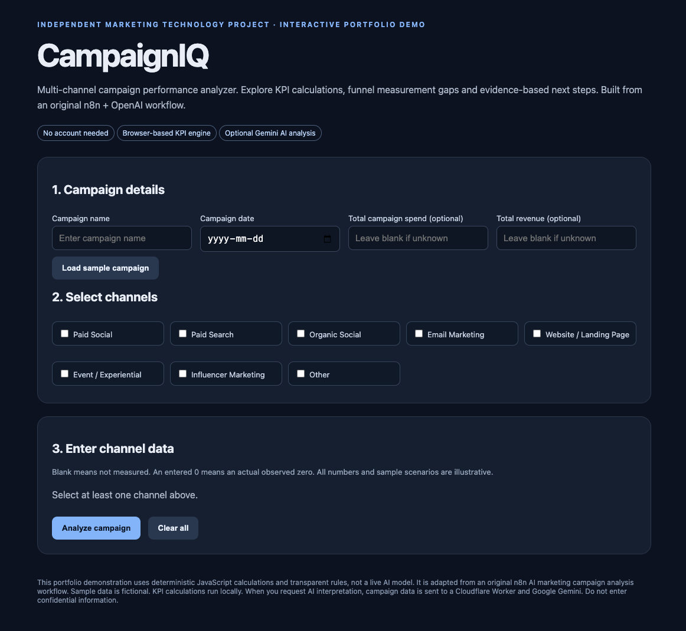

A channel-based reporting framework
Eight channel options with relevant fields for each: Paid Social, Paid Search, Organic Social, Email Marketing, Website / Landing Page, Event / Experiential, Influencer Marketing and Other.
INDEPENDENT MARKETING TECHNOLOGY PROJECT
Multi-channel campaign performance analysis, with optional AI interpretation.
Explore the live demoCampaignIQ is an independent portfolio project that brings channel-level metrics, funnel measurement and marketing interpretation into one interactive tool. It supports paid media, organic social, email, websites, events, influencer activity and a custom channel.
The project connects marketing measurement with an accessible browser experience: enter the metrics available, calculate relevant KPIs, identify missing funnel information and review practical next steps.
Translating marketing reporting needs into a structured analysis flow: channel-specific inputs, transparent KPI calculations, measurement-gap checks and a clear report. The public demo describes its origin as an n8n + OpenAI campaign-analysis workflow; the current web version adds browser-based calculations and optional Gemini interpretation.
Independent demonstration project. No client deployment, business uplift or production-scale usage is claimed.

Different channels describe performance in different ways. Paid media tracks impressions and clicks; email adds opens; events involve invitations, RSVPs and attendees. A useful analysis needs to respect those differences and make missing data visible before recommending changes.
CampaignIQ addresses this through channel-specific fields and an explicit distinction between an unmeasured result and a recorded zero.
Eight channel options with relevant fields for each: Paid Social, Paid Search, Organic Social, Email Marketing, Website / Landing Page, Event / Experiential, Influencer Marketing and Other.
Calculations include CTR, CPC, CPL, CPA and funnel conversion rates where the required inputs exist. Events add RSVP and attendance measures; email adds open and click-to-open rates.
Blank fields remain unavailable rather than becoming zero. Incomplete totals are flagged, and metrics with missing or invalid denominators display N/A.
Users can request Gemini interpretation after the calculation. The browser sends the supplied campaign data to a Cloudflare Worker endpoint. If the request fails, the demo labels its rule-based fallback clearly.
Enter a campaign name and date, with optional overall spend and revenue.
The form adapts to the selected channels. Leave unknown values blank; enter zero only when the observed result is actually zero.
The tool produces overall and channel-level KPIs, then flags missing lead or conversion data and recorded drop-offs that warrant investigation.
Review rule-based next steps, or request optional Gemini interpretation. Channel performance still needs comparison with campaign targets and previous periods.
Download the text report for review and follow-up. AI interpretation is included when generated.
The built-in fictional campaign combines Paid Social, Email Marketing and Event / Experiential data. The sample produces the following outputs:
Total leads
Total conversions
ROAS
Event RSVP-to-attendance rate
These values demonstrate calculation behaviour. They are not measured campaign results or evidence of improved marketing performance.
Current public demo: HTML, CSS, JavaScript, GitHub Pages and an optional Cloudflare Worker / Google Gemini integration.
Workflow origin described in the demo: n8n + OpenAI.
KPI calculations run locally. Optional AI interpretation sends campaign data externally; use the fictional sample or non-confidential inputs.
Try CampaignIQ